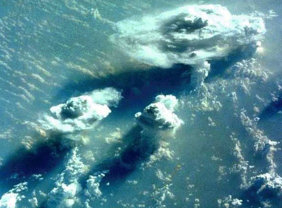

| We are familiar with three forms of symmetry, exhibited approximately in many natural and manufactured situations. They are | ||||||
| ||||||
| symmetry. | ||||||
| Hermann Weyl's wonderful book Symmetry remains the best reference, though it places some mathematical demands on the reader. | ||||||
| Less familiar is symmetry under magnification: zooming in on an object leaves the shape approximately unaltered. | ||||||
| Clouds: the smaller clouds are smaller copies of the larger cloud. | ||||||
|  |
Return to Introduction.